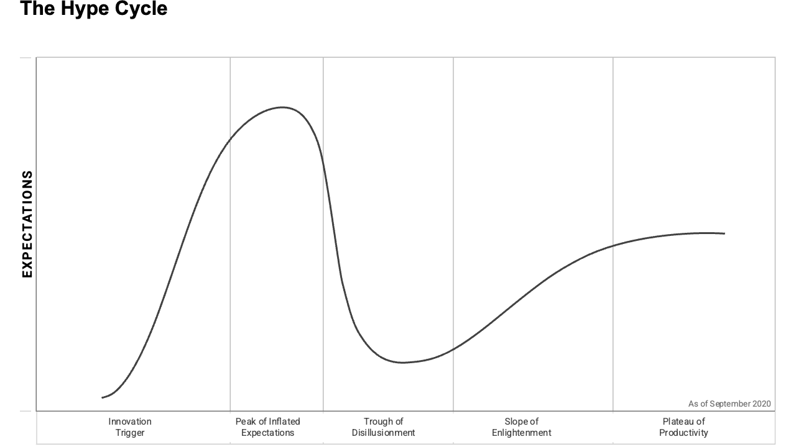

이번 호 머리기사

Insights
기술 도입 시점을 가르는 하이프 사이클 판단
Understanding Gartner’s Hype Cycles
CIO 대상
과열된 기대만 보고 신기술을 들이면 비용을 허비할 수 있다. 실망 구간에 들어갔다고 바로 접어도 기회를 놓친다. CIO와 IT 리더, 경영진은 하이프 사이클과 우선순위 매트릭스를 함께 봐야 한다. 기술의 현재 위치, 기대 효용, 우리 조직의 위험 성향을 함께 놓고 도입 시점을 정해야 한다.
신기술 도입Cost and Value ManagementTechnology and Data Management